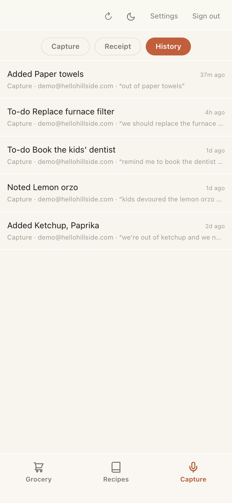
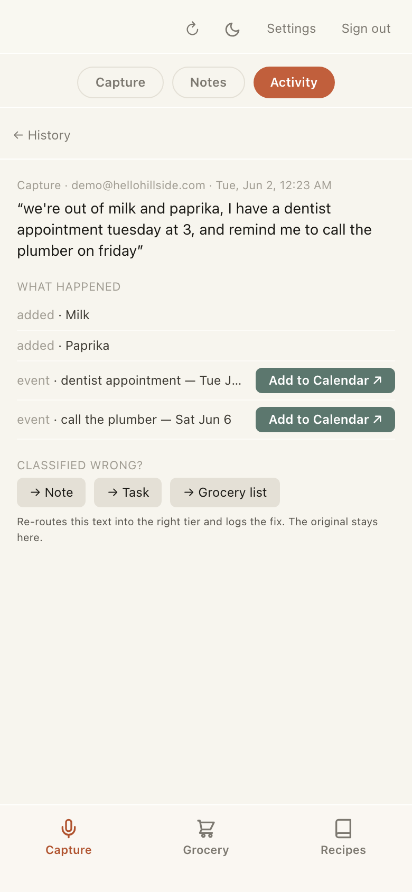
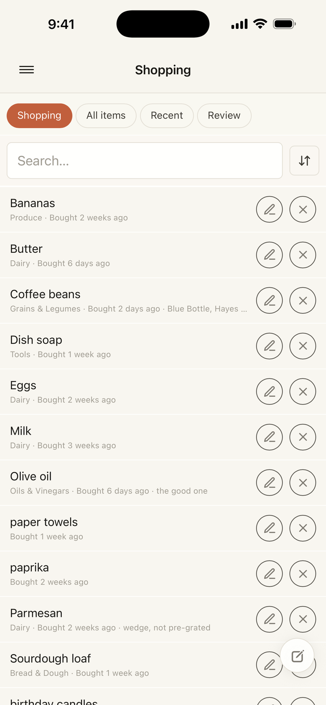
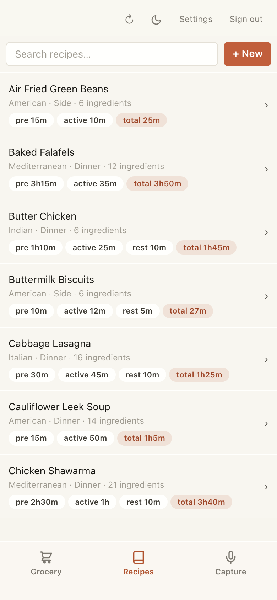

Your household, in one calm place.
Type it or say it — “out of milk,” “taco night Thursday,” “order more dog food in a month” — and Hillside files each one where it belongs. Meals, shopping, and the small things that pile up, off your mind.
Log inSay it once, it's done
Type a line or dictate a brain-dump — even paste a whole receipt — and Hillside reads it, sorts out what's a grocery, a to-do, a recipe or a reminder, and files each where it goes. One step, no forms.
Shopping that stays current
What to buy stays up front; what's already in the kitchen sits quietly behind it. Mark something bought and it drops off the list on its own — with a nudge before the half-jar of yogurt turns.
Meals & recipes
A steady weekday rotation and a shared recipe box the whole house can pull from — cook times, ingredients, and the dishes you've liked, all in one place.
Catches what you'd forget
“Sharpened the knives.” “Changed the furnace filter.” Hillside turns the throwaway line into a calendar reminder months down the road, and keeps the notes you'd otherwise lose.
Works with Claude
Connect Hillside to Claude and just ask — “what's on the shopping list?”, “we're out of butter,” “what did I buy last week?” It reads and updates your real kitchen, by voice or text.
A peek inside




How do I…?
How do I get in?
Hillside is invite-only for now. Ask whoever invited you for a signup code, then create your household at app.hellohillside.com.
How do I add things?
Type or dictate a line into the capture bar — “out of milk,” “taco night Thursday” — and Hillside files each one where it belongs. Back from the store? Paste the receipt and the whole shop is logged at once.
How do I use it with Claude?
In Hillside, open your household settings and tap Generate token under “Claude connector” — it produces a connector URL. In the Claude app, go to Customize → Connectors → Add custom connector, paste that URL, and save. Now just ask — “what's on the shopping list?”, “we're out of butter.” Claude reads and updates your real kitchen, by voice or text.
How do I get it as an app on my iPhone?
Hillside is a web app, but it installs like a native one. In Safari, open app.hellohillside.com, tap the Share button, then Add to Home Screen. You'll get a Hillside icon that opens full-screen — no browser bars, with pull-to-refresh. (On Android, use Add to Home screen from Chrome's ⋮ menu.)
Does my whole household share it?
Yes. Everyone in your household sees the same shopping list, recipes, and capture history, on every device.